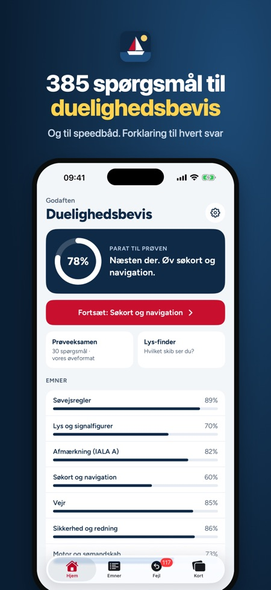
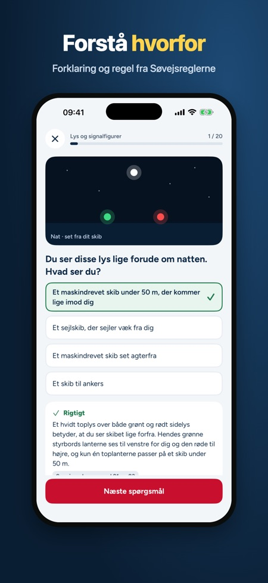
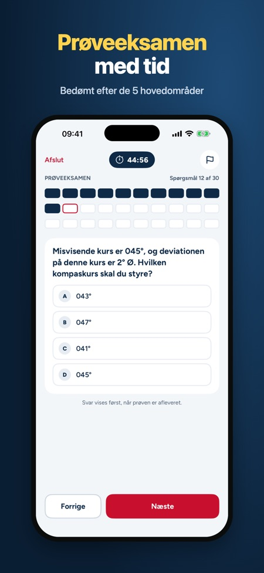

Appen forbereder dig til teoriprøven til duelighedsbevis i sejlads og til speedbådsbeviset med 385 øvespørgsmål og forklaring til hver. Du kan også tage en prøveeksamen bedømt som prøven.



Den dækker teoriprøven til duelighedsbevis i sejlads og speedbådsbeviset. Du vælger selv, om du vil øve til duelighedsbevis eller speedbåd.
Der er 385 øvespørgsmål i 8 emner, heriblandt 68 billedspørgsmål med lanterner, signalfigurer og bøjer.
Prøveeksamen til duelighedsbevis tillader højst 1 fejl i hvert af de 5 hovedområder og højst 3 i alt. Til speedbåd er der to dele med højst 2 fejl i del 1 og 3 i del 2.
Nej. Den teoretiske duelighedsprøve har intet fast antal spørgsmål, og appens prøveeksamen er et øveformat. Appen er uafhængig og ikke tilknyttet Søfartsstyrelsen eller Dansk Sejlunion.
Nej. Et engangskøb låser alle emner, ubegrænsede prøveeksamener, kort og Lys-finder op. Uden køb kan du bruge ét emne og tage én hel prøveeksamen.
Ja, appen virker uden internet og kræver ingen konto.
Spørgsmålene er på dansk som til prøven. Forklaringer og menuer findes på dansk, engelsk og tysk.
Forbered dig til teoriprøven til duelighedsbevis i sejlads og til speedbådsbeviset. 385 øvespørgsmål med forklaring, prøveeksamen med tid og kort over afmærkning, lanterner og lydsignaler. Betal én gang, intet abonnement.
HVAD ER MED
• 385 spørgsmål i 8 emner: søvejsregler, lys og signalfigurer, afmærkning (IALA A), søkort og navigation, vejr, sikkerhed og redning, motor og sømandskab samt speedbåd
• Forklaring og regelhenvisning (Søvejsreglerne) til hvert spørgsmål
• 68 billedspørgsmål med lanterner, signalfigurer og bøjer
• Prøveeksamen for duelighedsbevis: bedømt som prøven, højst 1 fejl i hvert af de 5 hovedområder og højst 3 i alt
• Prøveeksamen for speedbåd: to dele som den rigtige prøve, højst 2 fejl i del 1 og 3 i del 2
• Lys-finder: vælg de lys, du ser, og få at vide, hvilket skib det er, og hvem der viger
• 52 kort: afmærkning, fyrkarakterer, lanterner, signalfigurer og lydsignaler
• Mine fejl: spørgsmål, du svarer forkert på, kommer igen, til du har dem rigtige to gange i træk
• Hjemskærm med parathed og det emne, du bør øve næste gang
• Prøvedato: nedtælling, dagens mål og påmindelser 14, 7 og 2 dage før prøven
SÅDAN VIRKER DET
Vælg duelighedsbevis eller speedbåd. Uden køb kan du bruge ét emne (til speedbåd selve speedbådsemnet) og tage én hel prøveeksamen. Et engangskøb låser alle emner, ubegrænsede prøveeksamener, kort og Lys-finder op. Appen virker uden internet og kræver ingen konto.
Spørgsmålene er på dansk som til prøven. Forklaringer og menuer findes på dansk, engelsk og tysk.
Den teoretiske duelighedsprøve har intet fast antal spørgsmål; censor laver opgaverne og hører dig mundtligt i søvejsreglerne. Appens prøveeksamen er et øveformat.
Appen er uafhængig og ikke tilknyttet Søfartsstyrelsen, Dansk Sejlunion eller andre myndigheder. Alle spørgsmål er skrevet til øvelse.